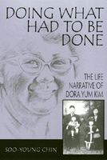

<body bgcolor="#FFFFFF" text="#000000" link="#0000FF" vlink="#CC0000" alink="#CC0000"><center><hr width="350" size="1" align="center" noshade>The history of Koreans in America as told through the remarkable life story of one Korean American woman<hr width="350" size="1" align="center" noshade><p><a href="https://cdcshoppingcart.uchicago.edu/Cart/ChicagoBook.aspx?ISBN=9781566396936&&PRESS=temple" target="_top">Buy this book!</a> | <a href="https://cdcshoppingcart.uchicago.edu/Cart/Cart.aspx?PRESS=temple" target="_top">View Cart</a> | <a href="https://cdcshoppingcart.uchicago.edu/Cart/Cart.aspx?PRESS=temple" target="_top">Check Out</a></p><p></p></center><!--none//--><h1>Doing What Had to Be Done</h1>
<H2>The Life Narrative of Dora Yum Kim</H2>
<h3>Soo-Young Chin</h3>
<P>cloth 1-56639-693-X $85.50, Jun 99, <FONT COLOR=#990033>Available</FONT>
<br>paper 1-56639-694-8 $32.95, Jun 99, <FONT COLOR=#990033>Available</FONT>
<BR> 272 pp
6x9
1&nbsp;figure 19&nbsp;halftones
</P><BLOCKQUOTE><I>"History comes to life in this compelling saga of a courageous and controversial Korean-American woman and her biographer. Dora Kim's story&#151frank, painful, but inspirational&#151is an enduring testimony to the power of the human spirit to rise to new challenges. Soo-Young Chin's monumental study is a major contribution..."</I>
<BR>&#151<B>James M. Freeman</B>, author of <I>Changing Identities: Vietnamese Americans 1975-1995</I><I></I></BLOCKQUOTE>
<p>The first biography of an American-born Korean woman, <i>Doing What Had to Be Done </i>is, on the surface, the life story of Dora Yum Kim. But telling more than one woman's story, author Soo-Young Chin offers more than an unusual glimpse at the shaping of a remarkable community activist. In addition&#151as she questions her subject, introduces each chapter, and reflects on how Dora's story relates to her own experience as a Korean-American who immigrated to this country as an adult&#151she carves around Dora's compelling and courageous life story, a story of her own and one of all Korean-Americans.
<p>Born in 1921, Dora, as she tells Chin her story, chronicles the shifting salience of gendered ethnic identity as she journeys through her life. Traveling through time and place, she moves from San Francisco's Chinatown&#151where Koreans were a minority within a minority&#151to suburban Dewey Boulevard where Dora and her family attempt to integrate into mainstream America and where she becomes a social worker in the California State Department of Employment. As the Korean immigrant community grows in the late 1960s, Dora becomes deeply involved in community service. She remembers teaching English to senior citizens and preparing them for their naturalization exams, finding jobs for the younger Koreans, and founding a community center and meals program for seniors.
<p>A detailed and inspiring lens through which to view Korean-American history, Dora's life journey echoes the changing spaces of the American social landscape. The grace and ease with which Dora just "does what has to be done" shows us the importance of everyday acts in making a difference.
<BR>&nbsp;<h2>Excerpt</h2><P>Excerpt available at <a href="http://www.temple.edu/tempress">www.temple.edu/tempress</a></p>
<BR>&nbsp;<h2>Reviews</h2>
<p><i>"...a wonderfully nuanced portrait of the lives of Koreans and Korean Americans in the US, as well as a powerful meditation on the meanings of "Americanness" in the late twentieth century. [Chin] also addresses theoretical issues relating to traditions of Western and Asian autobiography&#151and ethnography in terms a non-anthropologist can grasp, while the footnotes add another layer of analysis for the specialist."</i>
<br>&#151<b><i>The Women's Review of Books</i></b>
<BR>&nbsp;<P><p>The Tuesday, October 11th issue of the <i><a href=" http://www.sfgate.com/cgi-bin/article.cgi?file=/c/a/2005/10/11/BAGKIF6FP51.DTL&type=printable" target="new">San Francisco Chronicle</a></i> contained Dora Yum Kim's obituary, which identified her as the subject of <i>Doing What Had To Be Done</i>.</P><BR>&nbsp;<br>
<h2>Contents</h2><P>
<p>Acknowledgments
<p><b>Part I: Chinatown, San Francisco </B>
<br>Descendants of Man Suk Yum and Hang Shin Kim: A Korean American Family Tree
<br>1. American Origins
<br>2. Coming of Age
<br>3. A Mother's Devotion
<p><b>Part II: Dewey Boulevard</b>
<br>4. Leaving Chinatown
<br>5. The Influx
<br>6. Centering Service
<br>A Family Gallery
<p><b>Part III: A Room of Her Own</b>
<br>7. Hidden Costs
<br>8. On Her Own
<br>9. <i>Hwan'gap</i>
<br>Conclusion: Doing What Had to Be Done
<br>Epilogue: Loose Ends
<br>Chronology
<br>Notes
<br>Index
</P><BR>&nbsp;<H2>About the Author(s)</H2>
<table><tr><td valign="top"><img src="/tempress/authors/1420_au.gif" height="90" width="75"></td><td width="100%" valign="middle"><p><B>Soo-Young Chin</B> is Assistant Professor of Anthropology and Asian-American Studies at the University of Southern California.</P></td></tr></table>
<BR><H2>Subject Categories</H2>
<p><A HREF="/tempress/asian_amer.html" TARGET="_top">Asian American Studies</a>
<BR><A HREF="/tempress/women.html" TARGET="_top">Women's Studies</a>
</p>
<BR><h2 class="inpageheading">In the series</H2>
<P><I><a href="http://www.temple.edu/tempress/asam_history.html" onMouseOver="window.status='Click for other books in this series!'; return true;" onMouseOut="window.status=''; return true;" target="_top">Asian American History and Culture</a></i>, edited by K. Scott Wong, Linda Trinh Võ, and Cathy Schlund-Vials.
</p><p>Founded by Sucheng Chan in 1991, the <I>Asian American History and Culture</I>, series has sponsored innovative scholarship that has redefined, expanded, and advanced the field of Asian American studies while strengthening its links to related areas of scholarly inquiry and engaged critique. Like the field from which it emerged, the series remains rooted in the social sciences and humanities, encompassing multiple regions, formations, communities, and identities. Extending the vision of founding editor Sucheng Chan and emeriti editor Michael Omi and David Palumbo-Liu, series editors K. Scott Wong, Linda Trinh Võ, and Cathy Schlund-Vials continue to develop a foundational collection that embodies a range of theoretical and methodological approaches to Asian American studies.</p>
<p align="center"><a href="https://cdcshoppingcart.uchicago.edu/Cart/ChicagoBook.aspx?ISBN=9781566396936&&PRESS=temple" target="_top">Buy this book!</a> | <a href="https://cdcshoppingcart.uchicago.edu/Cart/Cart.aspx?PRESS=temple" target="_top">View Cart</a> | <a href="https://cdcshoppingcart.uchicago.edu/Cart/Cart.aspx?PRESS=temple" target="_top">Check Out</a></p><p><font face="Arial" size="1"><a href="copyright.html" onMouseOver="window.status='Web Copyright Policy';return true;" onMouseOut="window.status=''" title="Web Copyright Policy">&copy;</a> 2015 <a href="http://www.temple.edu" target="new" onMouseOver="window.status='Link to Temple University home page';return true;" onMouseOut="window.status=''" title="Link to Temple University home page">Temple University</a>. All Rights Reserved. http://www.temple.edu/tempress/titles/1420_reg.html</font></p>